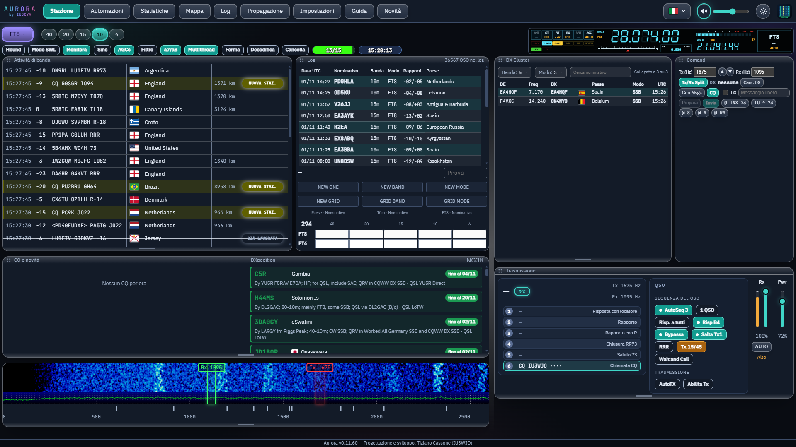

Your FT8 & FT4 station, reimagined.
Aurora decodes, transmits and runs your QSOs with its own engine — a live waterfall, an automatic DXCC card, phone remote control and CAT for 300+ radios. Beautiful to use, fast on air.
Windows 10/11 · 64-bit · always the latest version · 🐧 Linux · all downloads

Everything a digital-mode ham wants
One window, designed for the shack: nothing to hunt for, every control explained.
Own decoding engine
FT8 and FT4 decoding and transmission built in, plus JT65 and JT9. No other program needed.
Live waterfall
A sharp, JTDX-faithful waterfall with 30 palettes, gain and zero, Rx/Tx markers and a spectrum plot.
DXCC card
See at a glance whether a station is a new country, band or mode — read from your own log.
Automatic QSOs
AutoSeq, queue of callers, reply to all, DX wish-list and safe limits, with a STOP that is always one click away.
Phone remote
Pair your phone with a QR code and watch or operate the station from the couch.
CAT for every radio
Hamlib and OmniRig, frequency, mode, split, PTT, meters and clickable PRE/ATT/AGC/NB/NR.
DXpeditions & propagation
NG3K DXpedition calendar, DX cluster, world map and who-heard-me propagation at a glance.
Smart notifications
53 sounds, colours per message type, one alert per station, customisable toasts.
…and a lot more
Plays well with your shack
Aurora talks to the programs you already use.
Designed to be read
Colour-coded messages, struck-through worked stations, flags and distances — every control has a “?” that explains it.
Made for contesting speed
Double-click to call, instant toasts, a fixed layout that never jumps, and settings that save themselves.
Yours to change
Open source under GPL-3.0. Read it, fix it, make it better — and it stays free.
Get on the air in three steps
The link always points to the latest version.
Or follow the steps for your distribution:
- 1
wget https://github.com/wifi75/Aurora/releases/latest/download/Aurora-Linux-amd64.deb - 2
sudo apt install ./Aurora-Linux-amd64.deb - 3
sudo apt install libhamlib-utils sudo usermod -aG dialout $USER - 4
aurora-desktop
- 1
sudo dnf install fuse fuse-libs webkit2gtk4.1 libappindicator-gtk3 hamlib - 2
wget https://github.com/wifi75/Aurora/releases/latest/download/Aurora-Linux-x86_64.AppImage chmod +x Aurora-Linux-x86_64.AppImage - 3
sudo usermod -aG dialout $USER - 4
./Aurora-Linux-x86_64.AppImage
- 1
sudo pacman -S --needed fuse2 webkit2gtk-4.1 libappindicator-gtk3 hamlib - 2
wget https://github.com/wifi75/Aurora/releases/latest/download/Aurora-Linux-x86_64.AppImage chmod +x Aurora-Linux-x86_64.AppImage - 3
sudo usermod -aG uucp $USER - 4
./Aurora-Linux-x86_64.AppImage
- 1
sudo apt install git # Fedora: sudo dnf install git · Arch: sudo pacman -S git - 2
git clone https://github.com/wifi75/Aurora.git cd Aurora ./scripts/compila-linux.sh - 3
sudo apt install ./desktop/src-tauri/target/release/bundle/deb/*.deb - 4
git pull ./scripts/compila-linux.sh --senza-pacchetti